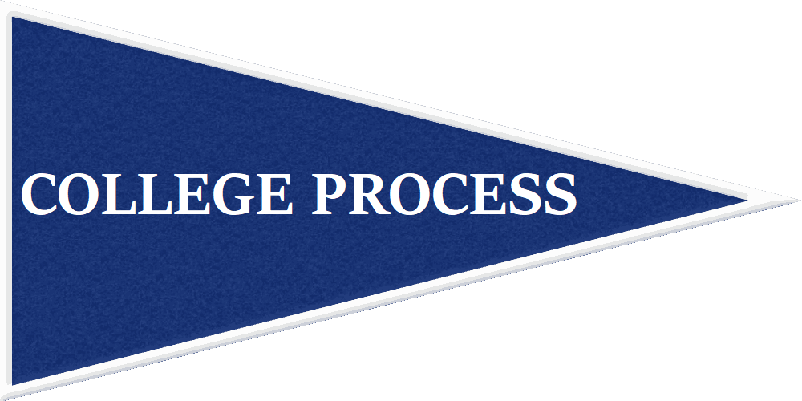
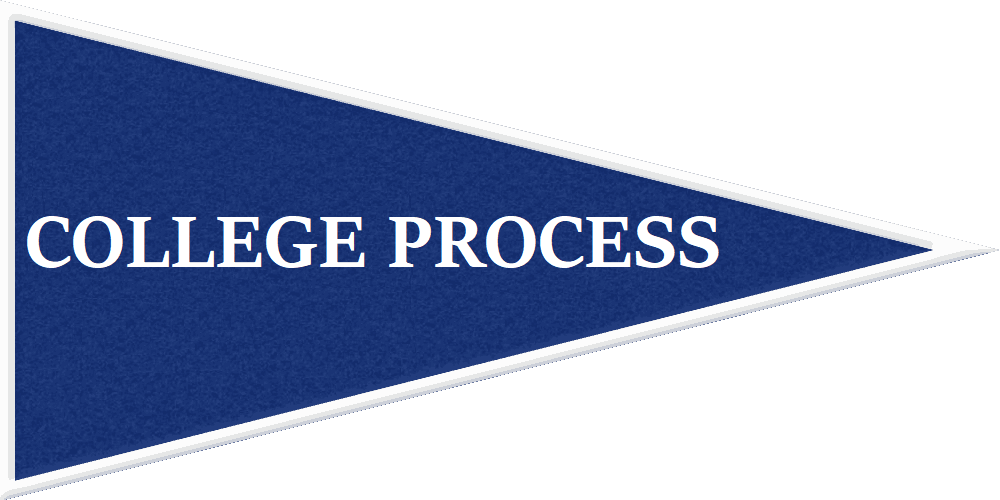

By Grade
Skip to Sophomore Year, Junior Year, Senior Year, Senior Year By The Month
- Freshman Year
- Keep your focus on personal development rather than the college process; take challenging courses and form positive relationships with school faculty.
- Enter high school in a growth mindset. Build intellectual curiosity and take risks- run for club positions, try new things, make your own club, etc.
- Get involved in your school and community.
- In regards to the college process, though, consider:
- Setting up a Naviance account if you haven’t already. You can take surveys on the site like the strengths explorer survey as well as start researching colleges.
- Looking at academic requirements for graduation, college admission, and, if you’re a student athlete, looking at the NCAA core course requirements.
- Take the PSAT in the fall.
- Meet with and get to know your guidance counselor. Counselors have a lot of resources to offer but only if you ask.
- Tentatively plan course selection by mapping out core courses and the classes you want to take throughout high school. Be flexible to change, though. Plan to challenge yourself academically more every year.
- Record major awards, accomplishments, and activities (do this all four years).
- Sophomore Year
- Continue focusing on personal development, challenging yourself academically, and developing leadership skills.
- Stay involved in the school and community and continue using your guidance counselor as a resource.
- Start considering your family's plan for paying for college. Consider getting the book 'Secrets of a Financial Aid Pro: Master the College Funding Process and Give Your Child Lifelong Financial Skills Without Losing Your Cool' if you need to learn more about financial aid.
- Take the PSAT and consider studying for standardized tests if you feel you need to (SAT + ACT). The summer before junior year is a good time to study for standardized tests. Try taking one practice test in the spring of sophomore year to determine how much you need to study to reach your goal score.
- If necessary, consider what subject tests you want to take junior year and, if you feel very prepared, consider taking one this year.
- Schedule a challenging academic schedule for junior year; ideally more than sophomore year.
- Junior Year
- Focus on getting good grades in your junior year (especially your APs) as junior year can be one of the most important years academically.
- Start looking at college planning resources at your high school and through outside resources (like the Fiske Guide To Colleges).
- Begin making a list of potential colleges (Constructing Your College List) and consider visiting them. Sometimes going on an official campus visit for a college can result in them waiving the fee for your application. It, also, gives the added bonus of demonstrating interest (Demonstrated Interest) in the college.
- If you can't visit colleges, then consider contacting them, requesting more information about them, talking to a representative at a college fair, or finding another way to demonstrate interest. This will help you narrow down colleges as well because you will know if you aren't interested in the college.
- Take the PSAT/NMSQT.
- Register for the SAT, ACT, and, if necessary, subject tests. Ideally schedule the SAT and ACT in the fall as you will have more time to study and retake; if you can finish all standardized tests before senior year you will have more time to work on your college applications.
- Look at the testing requirements of the colleges on your list. Remember that if a school ‘recommends’ SAT II’s then it is important that you take them. SAT II’s are content based and studying is almost always necessary (SAT IIs/ Subject Tests). Even if you excelled in the corresponding AP course there is often slightly different content or additional content on the SAT subject test.
- Consider what teachers you want to ask for recommendation letters and inform them that you will want one. Choose teachers that know you best; consider what you excel in academically or what classes you took that you felt you showed positive character traits in that you want admissions officers to see. For example, perhaps the teacher of a class you struggled in could give good insight into how you handle challenges.
- If there is a recommendation letter form for your high school where you put some information about yourself for the teachers writing your recommendation letters then fill that out.
- Continue planning your family's way to finance college and, if necessary, learn about federal and private student loans and grants.
- Start looking into scholarship opportunities in your community and beyond.
- Choose a CHALLENGING schedule for senior year. Colleges will see this as an indicator of your intellectual curiosity.
- What you do in the summer after junior year can be important to admissions officers. Taking a summer job or internship that is relevant to your academic or career interests is one way to impress admission officers.
- Senior Year
- Don't slack off academically. Try to get good quarter one grades and send them to any school(s) you applied early decision/ early action. Good senior grades strengthens your case for intellectual curiosity and demonstrates your work ethic. Do the same for first semester grades for your regular decision schools. Senior grades can be important when admissions officers make their decision.
- Finish standardized tests and send in college applications earlier rather than later. Be aware of ‘priority deadlines’ or any deadlines that colleges prefer your application to be submitted by in addition to the official deadlines.
- Have a strong application strategy.
- Be aware of financial aid forms like the FAFSA. If you are concerned about the financial aid process consider getting the book 'Secrets of a Financial Aid Pro: Master the College Funding Process and Give Your Child Lifelong Financial Skills Without Losing Your Cool' if you don't have it already.
- Search for scholarship opportunities in your community and online. Note the deadlines to apply.
- If applicable, be aware of your athletic recruitment potential and how that plays in.
- Most applications are submitted by either November or January and decisions are received by mid-April.
- May 1st is national college decision day.
Here I will give a tentative plan by month of your senior year:
October, November, December, January, February, March, April, May and June.
| Month | Tasks To Complete |
|---|---|
| September |
|
| October |
|
| November | |
| December |
|
| January | |
| February | |
| March | |
| April |
|
| May and June |
|
 
